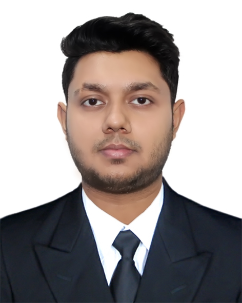

My Resume

Mukid Dad Khan Onim
Address: 88/A, Indira Road, Dhaka-1215
Mobile No: (+880)1770511580
E-mail : animdad@gmail.com
I have a clear, logical mind with a practical approach to problem-solving and a drive to see things through to completion.
I have more than 2 years of experience in managing and leading teams across multiple sectors.
I am eager to learn, I enjoy overcoming challenges, and I have a genuine interest in Business Management and making organisations successful.
Career Summary:
- Developed strategies to target new business opportunities that resulted in a 125% growth in revenue.
- Negotiated partnerships with leading industrial companies such as GE.
- Implemented training programs to bring salesforce up to speed on product offerings and best practices to revitalize underperforming sales numbers.
- Hosted leadership seminars to inspire leaders within the organization to grow and develop.
Academic Background
| Exam Title |
Major |
Institue |
Result |
Passing Year |
| S.S.C |
|
Dhanmondi Govt. Boys High School |
GPA: 5.00 |
2012 |
| H.S.C |
|
Dhaka City College |
GPA: 5.00 |
2014 |
| B.Sc |
C.S.E |
American International University of Bangladesh |
CGPA:3.78 |
2018 |
| M.Sc |
Networking |
American International University of Bangladesh |
--- |
On Pogress |
Personal Details
- Father's Name : Khan Md. Mahmudul Haque
- Mother's Name : Shamima Parvin
- Date of Birth : June 21, 1996
- Nationality : Bangladeshi
- Religion : Islam
- Current Location : Dhaka